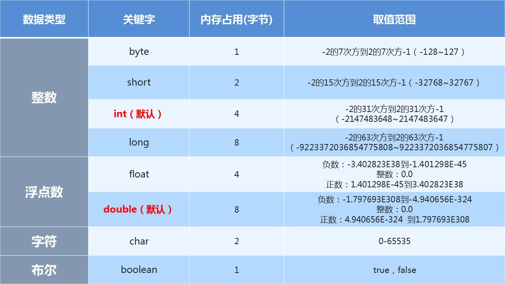

原文连接:https://www.cnblogs.com/Open-ing/p/11856810.html
类{
方法{
语句;
}
}
1、标识符的命名规则（必须遵守）
（2）不能使用Java的关键字（包含保留字）和特殊值
（3）数字不能开头
（4）不能包含空格
（5）严格区分大小写
2、标识符的命名规范（遭受鄙视）
（1）见名知意
例如：HelloWorld，String，System等
（3）变量、方法名等：从第二个单词开始首字母大写，其余字母小写，形式：xxxYyyZzz，
例如：age,name,bookName,main
（4）包名等：每一个单词都小写，单词之间使用点.分割，形式：xxx.yyy.zzz，
例如：java.lang
（5）常量名等：每一个单词都大写，单词之间使用下划线_分割，形式：XXX_YYY_ZZZ，
例如：MAX_VALUE,PI

1、数据类型
2、变量名
3、值
1、先声明后使用
2、在使用之前必须初始化,也就是赋值
3、变量有作用域
4、在同一个作用域中不能重名
变量的声明：
数据类型 变量名;
变量的赋值：
变量名 = 值;
变量的使用：
通过变量名直接引用
进制的换算
从右边开始依次是2的0次，2的1次，2的2次。。。
从右边开始，三位一组
从右边开始，四位一组
数据存储的最小单位。也就是二进制。二进制数系统中，每个0或1就是一个位，叫做bit（比特），其中8 bit 就称为一个字节(Byte)。
1000 0000 ==> -128（特殊规定）
规定：正数的补码与反码、原码一样，称为三码合一；
负数的补码与反码、原码不一样：
负数的原码：把十进制转为二进制，然后最高位设置为1
负数的反码：在原码的基础上，最高位不变，其余位取反（0变1,1变0）
负数的补码：反码+1
为什么float（4个字节）比long（8个字节）的存储范围大？
（1）符号位（2）指数位（3）尾数位
虽然计算机底层使用0和1表示false和true，但是在代码中不能给boolean类型的变量赋值0和1，只能赋值false和true

数据类型 变量名 = （数据类型）被强转数据值；
任意数据类型的数据与String类型进行“+”运算时，结果一定是String类型
但是String类型不能通过强制类型()转换，转为其他的类型

变量后++ ：变量先取值，然后再自身加1。
三元运算符
数据类型 变量名 = 关系表达式？结果1：结果2
条件判断的结果是true返回1，false返回2
左移：<<
运算规则：左移几位就相当于乘以2的几次方
右移：>>
运算规则：右移几位就相当于除以2的几次方
无符号右移：>>>
运算规则：往右移动后，左边空出来的位直接补0，不看符号位
按位与：&
运算规则：
1 & 1 结果为1
1 & 0 结果为0
0 & 1 结果为0
0 & 0 结果为0
按位或：|
运算规则：
1 | 1 结果为1
1 | 0 结果为1
0 | 1 结果为1
0 | 0 结果为0
按位异或：^
运算规则：
1 ^ 1 结果为0
1 ^ 0 结果为1
0 ^ 1 结果为1
0 ^ 0 结果为0
按位取反：~
运算规则：~0就是1
~1就是0
如果操作数是boolean类型，就是逻辑运算符，如果操作数是整数，那么就位运算符。
提示：
（1）表达式不要太复杂
（2）先算的使用()